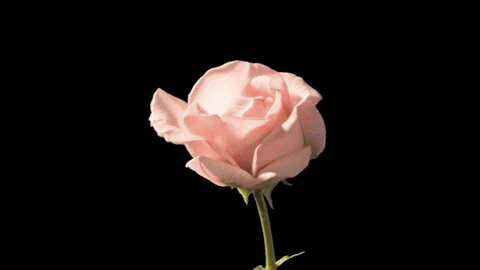

Steps to Personal Blossoming
Nurture Yourself: Just like a flower needs the right environment to grow, you need to care for your well-being. This includes eating well, staying active, getting enough sleep, and tending to your mental and emotional health. Find what rejuvenates you and make it a part of your routine.
Embrace Change: Flowers go through stages, from a bud to full bloom, and so do we. Embrace the different phases of your life, understanding that challenges often lead to growth. Allow yourself to evolve naturally.
Stay Connected to Your Roots: Know who you are and where you come from. Stay connected to your core values and your identity. Use this as a source of strength, just like roots give nourishment to a flower.
Find Your Light: Flowers bloom when they get enough sunlight. Find what energizes and motivates you, whether it’s a creative pursuit, a passion, or a new goal. Surround yourself with positivity and people who uplift you.
Be Patient with Yourself: Blossoming takes time. Don’t rush your journey—trust that with the right care and environment, you will grow into the best version of yourself when the time is right.
Express Your Unique Beauty: Every flower is different, and so are you. Embrace your individuality and the unique qualities that make you special. Let your personality and passions shine brightly without fear of judgment.
